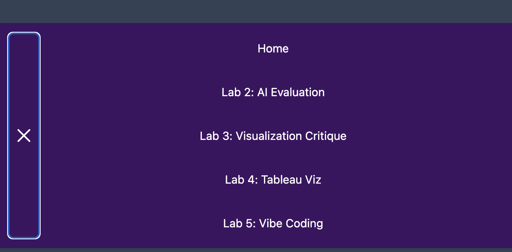
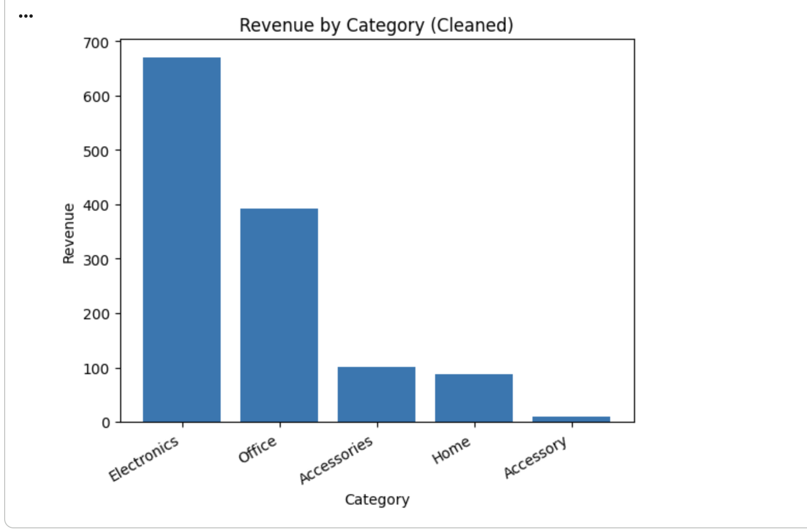
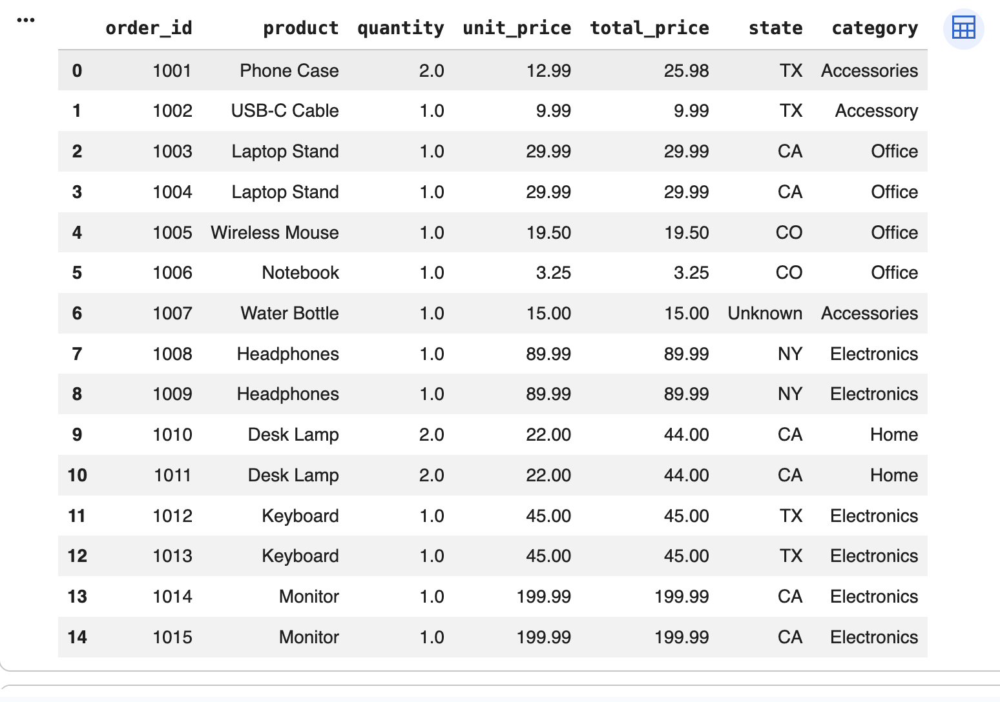

Experiment A: Portfolio Enhancement
I used AI to help me add a responsive navigation menu (hamburger menu on mobile) and CSS transitions/animations for smoother interaction.
My prompts
Prompt 1:
I have a portfolio website with a sticky nav that is currently a nav,ul,li,a list.
I want a responsive navigation bar where on mobile it turns into a hamburger menu that opens/closes when clicked.
Please keep my current colors and overall look. My nav background is #3d1461 and my links are white.
Prompt 2:
Can you add simple CSS transitions/animations so the nav links feel smoother (hover transition) and the hamburger icon animates into an “X” when open?
Prompt 3:
Please add basic first-person comments in the HTML/CSS/JS that show what I understand.
Keep the comments simple.AI output (before my edits)
<nav>
<button class="nav-toggle" type="button">Menu</button>
<ul class="nav-links">
<li><a href="index.html">Home</a></li>
<li><a href="lab02.html">Lab 2: AI Evaluation</a></li>
<li><a href="lab03.html">Lab 3: Visualization Critique</a></li>
<li><a href="lab04.html">Lab 4: Tableau Viz</a></li>
<li><a href="lab05.html">Lab 5: Vibe Coding</a></li>
</ul>
</nav>/* AI output snippet (before my edits) */
.nav-links {
display: none;
}
.nav-links.open {
display: flex;
}
.nav-links a {
transition: background-color 0.3s ease;
}// AI output snippet (before my edits)
const button = document.querySelector(".nav-toggle");
const menu = document.querySelector(".nav-links");
button.addEventListener("click", () => {
menu.classList.toggle("open");
});What I changed
- I changed the HTML to match my existing site structure (I kept nav and ul instead of switching to a totally new layout).
- I kept my current styling (same sticky nav, same colors, same spacing), and only added extra CSS for the hamburger button and animations.
- I set the mobile breakpoint to 768px because my portfolio already uses 768px for mobile.
- I added a small animation so the menu fades/slides in when it opens on mobile.
- I updated the JavaScript to also close the menu when I click a link and when the screen resizes back to desktop size.
- I added simple first-person comments so I can explain the code.
Screenshot / demo

Experiment B: Python (Google Colab) — Clean & Transform a Messy Dataset
I used AI to generate Python in Google Colab to clean a messy dataset. I removed duplicates, handled missing values, standardized text categories, and exported a cleaned CSV.
Notebook link
My prompts
Prompt 1:
I need Python code for Google Colab to clean and transform a messy CSV dataset.
The dataset has duplicates, missing values, inconsistent state names (ex: "Texas" vs "TX"), inconsistent category casing,
and money columns stored as strings with "$".
Please: load the CSV, clean it, standardize state/category values, handle missing values, and export a cleaned CSV.
Prompt 2:
Can you add simple first-person comments explaining what each step is doing?
I want the comments to be honest and basic.
Prompt 3:
My "state" column becomes NaN after mapping with a dictionary.
Can you fix the code so it keeps original values if they are not in the map and only changes the ones it recognizes?AI output (before my edits)
# AI output snippet (before my edits)
df["state"] = df["state"].str.lower().map(state_map)# AI output snippet (before my edits)
df["unit_price"] = df["unit_price"].replace("$", "").astype(float)What I changed
- I fixed the state mapping issue. The original approach used .map(), which turned anything not in the dictionary into NaN.
- I updated the logic to map known values but keep the original value if it didn’t match.
- I added extra cleaning to state text (strip spaces, lowercase first) so mapping works more reliably.
- I replaced blanks with "Unknown" so the state column isn’t empty.
Screenshot / results

